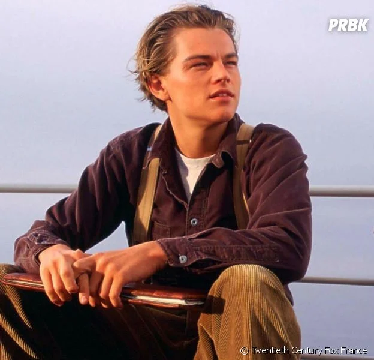
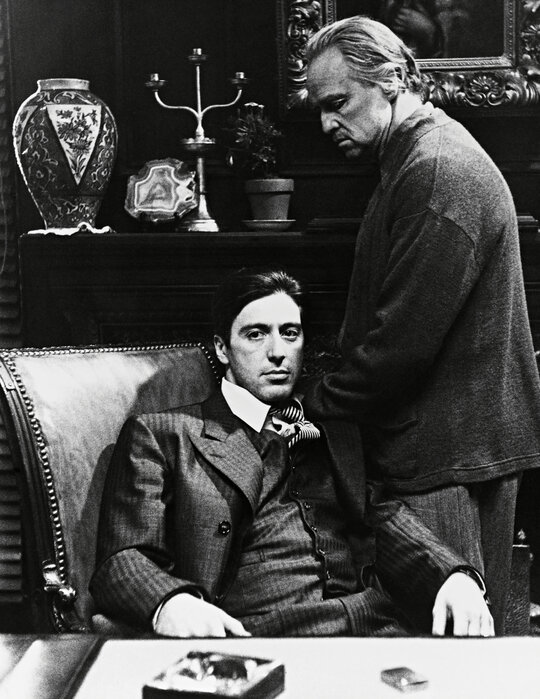
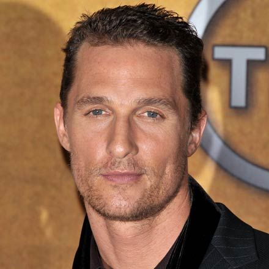
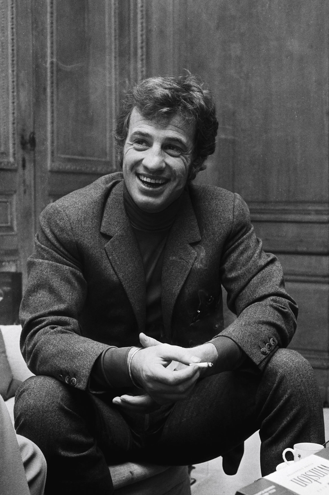

Leonardo Di Caprio

Métiers : Acteur, Producteur, Producteur délégué
Nom de naissance : Leonardo Wilhelm DiCaprio
Nationalité : Américain
Naissance : 11 novembre 1974 (Hollywood, Californie - Etats-Unis)
Age : 48 ans
BIOGRAPHIE :
Né d'un père italien et d'une mère allemande favorisant au mieux ses aptitudes artistiques, Leonardo
DiCaprio suit des cours de comédie dès l'école primaire. Auditionnant pour la première fois en 1988,
il commence par tourner des spots publicitaires, puis obtient très vite quelques petits rôles à la
télévision (Les nouvelles aventures de Lassie, Santa Barbara), avant de se faire remarquer dans la
série Quoi de neuf, docteur ? en 1991. Mais il est surtout intéressé par le cinéma, et après un
premier film d'horreur (Critters 3), Leonardo DiCaprio est choisi parmi quatre cents candidats pour
jouer le beau-fils maltraité de Robert De Niro dans Blessures secrètes (1993).
Par la suite, il étonne en interprétant un attardé mental dans Gilbert Grape (1993), où il vole la
vedette à Johnny Depp. Sa composition lui vaut une double nomination comme Meilleur second rôle aux
Golden Globes et aux Oscars 1994. A l'aise dans tous les registres, ce surdoué enchaîne au cours de
l'année 1995 un western (Mort ou vif), une évocation de la vie d'Arthur Rimbaud (Rimbaud Verlaine)
et l'histoire d'un junkie (Basketball diaries). Choisissant ses films davantage sur des critères
artistiques qu'économiques, Leonardo DiCaprio, relégué au rang d'acteur secondaire, accède au statut
de star en 1996 lorsque sort sur les écrans Romeo + Juliette, une version contemporaine et déjantée
de l’œuvre de William Shakespeare réalisée par l'Australien Baz Luhrmann. Pari risqué, le film est
un succès international.
Mais le meilleur reste à venir avec Titanic (1997), la fresque inoubliable de James Cameron, dont
les recettes engendrées aux Etats-Unis s'élèvent à plus de 600 millions de dollars. Amant de Claire
Danes puis de Kate Winslet à l'écran, il fait figure de nouveau héros romantique et devient l'objet
d'une véritable "DiCaprio mania". Les sorties des films Celebrity de Woody Allen et L'Homme au
masque de fer, tournés avant le phénomène Titanic, bénéficient de cette déferlante. De 2,5 millions
de dollars, son cachet passe à 20 millions pour le voyage initiatique de La Plage (2000) du
Britannique Danny Boyle. Les grands réalisateurs de ce monde se l'arrachent et lui confient des
personnages plus matures à l'image de Steven Spielberg qui lui permet de camper un escroc dans
Arrête-moi si tu peux.
Sa collaboration avec Martin Scorsese, entamée avec Gangs of New York (2003), se poursuit avec brio
au fil des années, et donne lieu à plusieurs films de qualité comme Aviator (2004), Les Infiltrés
(2006), Shutter Island (2010) et Le Loup de Wall Street (2013). Le succès est constamment au
rendez-vous.
Le plus souvent, les personnages qu'il incarne sont en proie à des tensions permanentes. En
témoignent ses prestations d'un mercenaire dans Blood Diamond (2006), d'un espion dans Mensonges
d'Etat (2008) et d'un mari faisant face à la crise que traverse son couple dans Les Noces rebelles
(2009) où il retrouve Kate Winslet. Tournant sans cesse avec les plus grands metteurs en scène et
s'investissant pleinement dans ses rôles, Leonardo DiCaprio collabore ainsi successivement avec
Christopher Nolan (Inception), Clint Eastwood (J. Edgar), Quentin Tarantino (Django Unchained), Baz
Luhrmann (Gatsby le Magnifique) et Alejandro González Iñárritu (The Revenant).
Le western de ce dernier, dans lequel l'acteur livre une prestation anthologique dans la peau d'un
trappeur qui tente de survivre dans une nature des plus hostiles, lui permet enfin de décrocher
l'oscar du meilleur premier rôle.
Al Pacino

Métiers : Acteur, Réalisateur, Producteur
Nom de naissance : Alfredo James Pacino
Nationalité : Américain
Naissance: 25 avril 1940 (New York, New York, Etats-Unis)
Age : 82 ans
BIOGRAPHIE:
Fils de Salvator Pacino tailleur de pierre et Rose Gerard sans profession, tous les deux originaires
de la Sicile. Elevé par ses grands-parents maternels James et Kate Gerard. Alfred James Pacino
collectionne depuis ses débuts les nominations aux Oscars, mais c'est seulement en 1992 qu'il
obtient sa première statuette pour Le Temps d'un week-end (adaptation du roman Parfum de femme de
Giovanni Arpino). Vingt ans plus tôt, il connaissait sa première nomination pour son interprétation
de Michael Corleone dans Le Parrain de Francis Ford Coppola.
L'acteur passe son enfance dans le Bronx. Envahi par la passion de la comédie, il entre à l'âge de
quatorze ans à la High School of Performing Arts de Manhattan, mais, sans diplôme, ni bagages
culturels, il se retrouve en difficulté face aux méthodes utilisées. A seize ans, il décide de tout
arrêter et passe deux ans à multiplier les petits boulots, pour revenir ensuite à sa vocation
première. Après avoir échoué à l'entrée de l'Actors Studio, il poursuit sa formation d'acteur aux
cours d'Herbert Berghof et a pour professeur Charles Laughton, qui deviendra un de ses pères
spirituels.
Il obtient son premier rôle principal avec la pièce de William Saroyan Hello, Out There et reçoit un
Obie (équivalent des Oscars pour le théâtre) pour son interprétation dans The Indian Wants the
Bronx. Les rôles au théâtre se succèdent, provocant louanges et critiques, et couronnés de plusieurs
prix. En 1966, il est enfin admis à l'Actors Studio, il y rencontre Dustin Hoffman et Robert De
Niro, la nouvelle génération d'acteurs formée selon "la méthode "qui occuperont le devant de la
scène durant les années 70 jusqu'au milieu des années 1980. Il y fait également la connaissance de
Lee Strasberg qui deviendra son nouveau mentor.
Quand on le découvre en 1969 dans son premier film Me, Natalie, Al Pacino a déjà une jolie carrière
théâtrale derrière lui, mais c'est Panique à Needle Park qui va réellement le révéler et trois ans
plus tard c'est la consécration : Le Parrain lui ouvre les portes de la gloire, il a trente-deux
ans. S'enchaînent ensuite plusieurs films et plusieurs citations aux Oscars, dont Le Parrain, 2ème
partie, c'est sa première rencontre à l'écran avec De Niro, qu'il retrouvera dans Heat dix ans plus
tard. Suite à ses interprétations cinématographiques de 1974, il est déclaré meilleur acteur de
l'année par La British Academy.
Il connaît par la suite une longue traversée du désert, refuse plusieurs rôles phares : Apocalypse
Now, Les Moissons du ciel et Kramer contre Kramer. Il fait de mauvais choix et doit faire face en
1985 à un échec cuisant avec Revolution, son premier film en costume. Le cinéma est alors
volontairement délaissé au profit du théâtre, sa passion et première vocation. En 1996 il réalise et
produit son premier long métrage (il a co-réalisé The Local Stigmatic en 1990 un film de 56 minutes)
: Looking for Richard, un essai sur la mise en scène de la pièce de Shakespeare Richard III (pièce
qu'il avait entre autre déjà joué en 1973 à Boston). Mi documentaire, mi adaptation c'est sans
doute, le film qui permet le mieux de comprendre l'acteur et d'apprécier son interprétation subtile
et riche en nuances qui a fait sa renommée.
Son retour cinématographique a réellement été marqué avec Mélodie pour un meurtre en 1989. Quatre
ans plus tard, il retrouve Brian De Palma avec qui il avait déjà signé Scarface pour L' Impasse. Le
comédien saura jouer avec son image et varier les rôles, de Dick Tracy, Frankie & Johnny jusqu'au
troisième opus du Parrain qui le fait entrer dans la légende. En 2002, il tourne avec deux jeunes
cinéastes remarqués. Il est le réalisateur en crise de Simone, une star est... créée d'Andrew Niccol
et le policier désabusé d'Insomnia de Christopher Nolan.
Reconnu aujourd'hui pour son fabuleux don de faire oublier l'acteur caché derrière un personnage, Al
Pacino, tend à présent à multiplier les casquettes comme dans Chinese coffee (adapté de la pièce de
théâtre) où il est réalisateur et interprète. En acteur reconnu, celui-ci n'hésite pas à donner la
réplique à de jeunes talents comme Colin Farrell dans La Recrue (2003), Ben Affleck et Jennifer
Lopez dans Amours troubles (2003) ou encore Matthew McConaughey dans Two for the Money (2006).
En 2007, il devient expert universitaire en psychiatrie criminelle pour les besoins de 88 minutes de
Jon Avnet avant de rejoindre l'équipe de braqueurs cools sur le tournage d' Ocean's 13 de Steven
Soderbergh. La même année, Andrew Niccol, avec qui Al Pacino avait déjà collaboré en 2002 pour
Simone, lui offre le rôle de Salvador Dali dans le drame Dali and I : The Surreal Story. Après avoir
retrouvé De Niro dans La Loi et l'ordre, Al pacino tend à ralentir son rythme de tournage.
On peut tout de même le voir dans Un flic pour cible, Jack et Julie, Les Derniers affranchis,
Manglehorn, Danny Collins et Hangman (des films généralement mal accueillis par la critique). En
2019, il joue un producteur dans Once Upon a Time… in Hollywood de Quentin Tarantino et campe ni
plus ni moins que Jimmy Hoffa dans le film de gangsters Netflix The Irishman de Martin Scorsese (où
il retrouve De Niro pour une quatrième fois). Parallèlement, l'acteur incarne le personnage
principal de la série Hunters, dans laquelle il se glisse dans la peau d'un chasseur de nazis.
En 2021, Al Pacino collabore pour la première fois avec un autre réalisateur de renom : Ridley
Scott, pour son biopic House of Gucci, qui revient sur l'assassinat de Maurizio Gucci en 1995,
petit-fils héritier de Guccio Gucci, fondateur de la célèbre marque de luxe italienne.
Matthew McConaughey

Métiers :Acteur, Producteur délégué, Producteur
Nationalité : Américain
Naissance : 4 novembre 1969 (Uvalde, Texas - Etats-Unis)
Age : 53 ans
BIOGRAPHIE :
Matthew McConaughey n'est encore qu'un étudiant en droit à l'université du Texas lorsqu'un ami
commun lui présente Richard Linklater, qui décide de lui confier une figuration dans son film
Génération Rebelle en 1993. Après le tournage, il reprend consciencieusement ses études avant
d'enchaîner quelques petits rôles, qui lui permettent surtout de faire connaître son physique
avantageux.
Le grand public va vraiment retenir son nom grâce au film Le Droit de tuer ? de Joel Schumacher en
1996. Avec ce personnage d'avocat battant, l'acteur se retrouve de plus en plus en tête d'affiche,
avec les plus grands de la profession. Il est choisi par Steven Spielberg pour interpréter l'un des
rôles principaux d'Amistad aux côtés d'Anthony Hopkins, et donne la réplique à Jodie Foster dans
Contact de Robert Zemeckis en 1997.
Avec son physique de séducteur, Matthew McConaughey incarne souvent le type du héros moderne, qu'il
soit historique (U-571 de Jonathan Mostow), héros d'un jour (En direct sur Ed TV de Ron Howard) ou
romantique (Un mariage trop parfait avec Jennifer Lopez). En 2002, il joue dans le thriller Emprise,
premier long métrage remarqué de Bill Paxton, et enchaîne sur une nouvelle comédie romantique,
Comment se faire larguer en 10 leçons, où il donne la réplique à Kate Hudson.
Après avoir joué un futur père, frère d'un "homme de petite taille" (joué par Gary Oldman), qui
découvre que son enfant est atteint de nanisme dans Tiptoes (2003), comédie dramatique inédite en
France, il change complètement de registre. Dans Sahara (2005) il campe un aventurier des temps
modernes, sorte d'Indiana Jones déjanté, à la recherche d'un trésor caché dans le désert africain.
Il y partage l'affiche avec son complice, Steve Zahn, et Penélope Cruz avec qui il vit une courte
idylle. Ayant pris des kilos de muscles pour les besoins du film, D.J. Caruso lui donne l'occasion
de les rentabiliser en lui confiant le rôle d'un athlète blessé qui se lie avec un bookmaker, Al
Pacino, dans Two for the Money (2006).
Mais l'appel de l'aventure rattrape une nouvelle fois le comédien, qui retrouve Kate Hudson et
l'embarque dans une chasse au trésor au coeur de L'Amour de l'or (2008) d'Andy Tennant, avant de
faire partie du premier essai dramatique de McG, intitulé We Are Marshall. L'acteur accepte ensuite
de jouer un second rôle dans la comédie loufoque de Ben Stiller Tonnerre sous les Tropiques (id.),
puis fait un nouveau détour par la comédie romantique aux côtés de Jennifer Garner, cette fois dans
Hanté par ses ex (2009). Après une courte absence, on le retrouve en 2011 dans La Défense Lincoln où
il incarne à nouveau un avocat. A partir de ce film, le comédien fait le choix d'orienter sa
carrière vers des projets plus complexes.
Ainsi, 2012 est pour Matthew McConaughey une année exceptionnelle, puisqu'il est à l'affiche de
plusieurs films mémorables : Magic Mike où il campe un stripteaseur-businessman, Killer Joe dans
lequel son personnage de tueur à gages mystérieux fait froid dans le dos et enfin Paperboy, où il
casse son image de beau gosse en campant un homosexuel balafré et torturé. Trois prestations
inoubliables. L'année suivante, il porte Mud qui se déroule lui aussi dans la moiteur du sud des
Etats-Unis, fait une apparition courte mais hilarante dans Le Loup de Wall Street de Martin Scorsese
pour ensuite se tourner vers la télévision où, en compagnie de Woody Harrelson, il se lance à la
poursuite d'un redoutable tueur en série dans True Detective. La série est un véritable
chef-d'oeuvre et la performance de l'acteur bluffante.
Fort de ces rôles marquants, Matthew entame 2014 avec un projet ambitieux pour lequel il perd 22
kilos : Dallas Buyers Club où il se glisse dans la peau de Ron Woodroof, une personne diagnostiquée
séropositive qui décide de s’engager dans une bataille contre les laboratoires et les autorités
fédérales. Cette même année, il joue le personnage principal d'Interstellar de Christopher Nolan.
Après cette période de franches réussites, Matthew McConaughey enchaîne avec trois films qui ne
rencontrent pas de succès malgré l'investissement de l'acteur : Nos souvenirs (2016), Free State of
Jones (id.) et Gold (2017). Toujours en 2017, il est l'Homme en noir de La Tour sombre, adaptation
d'une série de huit romans de Stephen King, qui fait un flop. Il faut attendre 2020 et le nouveau
film de gangsters de Guy Ritchie The Gentlemen pour que le comédien renoue avec le succès critique
et commercial. Il y incarne un trafiquant de drogue aussi charismatique qu'intelligent, aux côtés
d'un casting de haute volée composé, entre autres, de Charlie Hunnam, Colin Farrell et Hugh Grant.
Jean-Paul Belmondo

Métiers : Acteur, Producteur
Nationalité : Français
Naissance : 9 avril 1933 (Neuilly-sur-Seine, Hauts-de-Seine - France)
Décès : 6 septembre 2021 à l'age de 88 ans
BIOGRAPHIE :
Issu d'une famille d'artistes (son père était un célèbre sculpteur et sa mère artiste peintre), il pense faire une carrière sportive puis s'oriente vers la comédie et entre au conservatoire national d'art dramatique en 1951. Il y côtoye notamment Jean-Pierre Marielle, Bruno Cremer, Jean Rochefort et Claude Rich et apparaît pour la première fois dans À pied, à cheval et en voiture (1957) de Maurice Delbez. S'ensuivront Sois belle et tais-toi (Marc Allegret) et Les Tricheurs (Marcel Carné) en 1958.
Son premier rôle important lui est confié par Claude Sautet dans Classe tous risques et la révélation naît surtout avec A bout de souffle de Jean-Luc Godard en 1959. Dès lors, il se révèle un acteur aux multiples facettes et tient des rôles variés, dirigé par les plus grands réalisateurs. En 1961 il est Léon Morin, prêtre pour Jean-Pierre Melville puis il joue dans Un singe en hiver de Henri Verneuil aux côtés de Jean Gabin.
Par ailleurs, il enchaîne les films à succès tels L' Homme de Rio de Philippe de Broca (1964), Les tribulations d'un Chinois en Chine (1965), La Sirène du Mississippi de François Truffaut (1969), Borsalino de Jacques Deray (1970) ou Le Magnifique (1973). Il incarne même des rôles inattendus comme dans Pierrot le Fou de Godard en 1965 ou à contre-emplois tel Stavisky pour Alain Resnais en 1974. Il exécute toutes les cascades de ses films, notamment dans Peur sur la ville d'Henri Verneuil et multiplie au tournant des années 80 les triomphes au box-office, avec Georges Lautner pour Flic ou voyou ou Le Professionnel ou encore avec Gerard Oury pour L' As des As en 1982.
Claude Lelouch lui offre des rôles emblématiques (Itinéraire d'un enfant gâté en 1988 ou Les Misérables en 1995) mais il n'abandonne pas l'action ou ses anciens partenaires : on le retrouve auprès d'Alain Delon en 1998 dans Une chance sur deux de Patrice Leconte même si le succès est moins au rendez-vous qu'au théâtre où l'acteur rencontre un véritable triomphe. Ce qui ne l'empêche pas de répondre à l'appel de Bertrand Blier et de participer aux Acteurs en 2000. Près d'une décennie plus tard, Jean-Paul Belmondo fait son grand retour au cinéma, aux côtés de Francis Huster qui réalise aussi le film, dans Un homme et son chien (2009), drame dans lequel il interprète un homme qui se retrouve à la rue du jour au lendemain seul avec son chien.